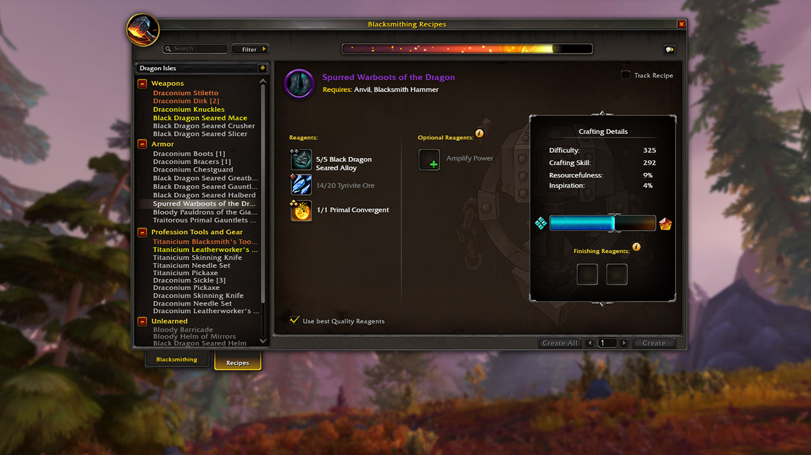
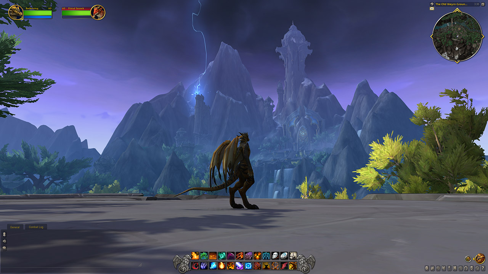

DESCUBRE NUEVAS FORMAS DE JUGAR
ACTUALIZACIONES DE LA EXPERIENCIA DE JUEGO
Dragonflight presenta importantes actualizaciones a la experiencia de juego. Disfruta de la mayor renovación del sistema de talentos que hemos realizado nunca, de las mejoras en la interfaz y del nuevo sistema de profesiones, y encuentra nuevas formas de aventurarte en Azeroth.

Nuevo sistema de talentos
Gana puntos de talento cada vez que subes de nivel y gástalos en uno de los dos nuevos árboles de talentos. Los árboles de talentos de clase ofrecen habilidades útiles para la tuya, mientras que los de especialización mejoran tus poderes ofensivos y de sanación.Más información.

Profesiones y fabricación
Conviértete en artesano de las Islas Dragón y cumple diferentes pedidos para tu reino. Busca ingredientes raros y crea asombrosos objetos mientras desbloqueas nuevas especializaciones para tu profesión.Más información.
